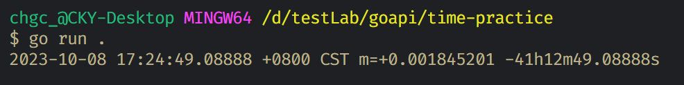
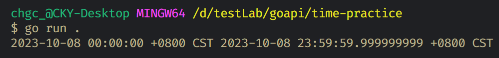

Go 的 time package，主要提供 time 相關的功能，這篇筆記整理一些常用的 function
引用方式
1 | import "time" |
常用方法
1 | time.Now() // 目前時間 (with 時區資訊) |
-
time Format 對應的數字
1
2
3
4
5
6
7
8月份 1,01,Jan,January
日 2,02,_2
時 3,03,15,PM,pm,AM,am
分 4,04
秒 5,05
年 06,2006
時區 -07,-0700,Z0700,Z07:00,-07:00,MST
周幾 Mon,Monday -
time.Add補充說明time.Add(<duration>), duration 的單位, Go 有提供以下幾種time.Secondtime.Minutetime.Hour
time.Add()會回傳time.Time的型別，表示可以串接下去，例如1
time.Now().AddDate(0, 0, 1).Add(-1 * time.Nanosecond)
-
time.AddDate補充說明，function 接受三個數字，分別代表 年，月，日
其他 API
-
比較時間
1
2
3
4
5now := time.Now()
oneDayAgo := now.AddDate(0, 0, -1)
isOneDayAgoBeforeNow := oneDayAgo.Before(now) // true
isOneDayAgoAfterNow := oneDayAgo.After(now) // false -
計時器
1
time.After(duration)
每多少時間執行一次
-
計算時間長度
1
2
3start := time.Now()
time.Sleep(5 * time.Second)
fmt.Println(time.Since(start)) -
計算時間差
1
2
3start := time.Now()
mockDate := time.Date(2023, 10, 7, 0, 12, 0, 0, start.Location())
fmt.Println(start, mockDate.Sub(start))
Time/Duration Struct 方法
Time
1 | Add(d Duration) Time |
Duration
1 | Hours() |
練習題
寫一個 function 取得一天的開始與結束時間，類似 date-fns 的 startOfDay 和 endOfDay 結合
1 | func DateRange(t time.Time) (beginOfDate time.Time, endOfDate time.Time) { |
